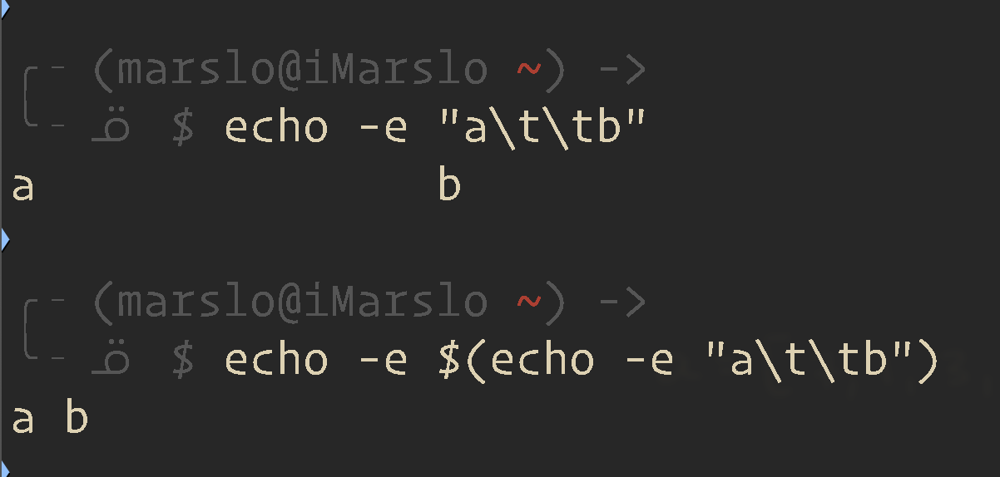

3.1.2.5 Locale-Specific Translation
Prefixing a double-quoted string with a dollar sign ($), such as $"hello, world", will cause the string to be translated according to the current locale
$ echo$'aa\'bb'
aa'bb
# ascii code
# hex octal hex octal
$ echo -e "\x27 \047 \\x22 \042"
'' " "
$ echo -e "Let\x27s get coding!"
Let's get coding!
$ echo-e"Let\x22s get coding!"
Let"s get coding!
$ echo'a b c'|xargs-n1-ttouchtouch a
touch b
touch c
$ echo'a b c'|xargs-n1-ptouchtouch a?...y
touch b?...y
touch c?...y
-t, --verbose
Print the command line on the standard error output before executing it.
-p, --interactive
Prompt the user about whether to run each command line and read a line from the terminal.
Only run the command line if the response starts with `y' or `Y'. Implies -t.
-I replace-str
Replace occurrences of replace-str in the initial-arguments with names read from standard in-
put. Also, unquoted blanks do not terminate input items; instead the separator is the new-
line character. Implies -x and -L1.
$ echo-e"1\na\n2\nb\n3\nc"|xargs-n2 -d'\n'1 a
2 b
3 c
paste
$ echo-e"1\na\n2\nb\n3\nc"|paste-s -d',\n'1,a
2,b
3,c
$ echo-e"1\na\n2\nb\n3\nc"|paste-d" " - -
1 a
2 b
3 c
sed
$ echo-e"1\na\n2\nb\n3\nc"|sed'N;s/\n/ : /'1: a
2: b
3: c
awk
$ echo-e"1\na\n2\nb\n3\nc"|awk'{ key=$0; getline; print key " : " $0; }'1: a
2: b
3: c
# or
$ echo-e"1\na\n2\nb\n3\nc"|awk'ORS=NR%2?FS:RS'1 a
2 b
3 c
# or
$ echo-e"1\na\n2\nb\n3\nc"|awk'NR%2{ printf "%s : ",$0;next; }1'1: a
2: b
3: c
# or
$ echo-e"1\na\n2\nb\n3\nc"|awk'{
if ( NR%2 != 0 ) line=$0; else { printf("%s : %s\n", line, $0); line=""; }
} END {
if ( length(line) ) print line;
}'1: a
2: b
3: c
while
$ echo-e"1\na\n2\nb\n3\nc"|whileread line1;doread line2;echo"$line1 : $line2";done1: a
2: b
3: c
combine every 3 lines
paste
# or every 3 lines
$ echo-e"1\na\n2\nb\n3\nc"|paste-d' ' - - -
1 a 2
b 3 c
awk
$ echo-e"1\na\n2\nb\n3\nc"|awk'NR%3{ printf "%s : ",$0;next; }1'1: a :2
b :3: c
xargs
$ echo{1..9}|fmt-1|xargs-n3123456789
format output
[!TIP|label:sample data]
$ paste<(sort a.txt)<(sort b.txt)|expand--tabs=10
a a
b b
d c
f d
e
$ pr-w30-m-t a.txt b.txt
a a
b b
d c
f d
e
$ echo-e"a\t\tb"
a b
$ echo-e$(echo-e"a\t\tb")
a b
1.2.2.1 -- echo -e
print file with ansicolor
$ commandcat c.txt
get get/exec get/subresource list create create/exec get/subresource
\e[32;1myes\e[0m \e[32;1myes\e[0m \e[32;1myes\e[0m \e[32;1myes\e[0m \e[32;1myes\e[0m no no
$ echo-ne$(commandcat c.txt |sed's/$/\\n/'|sed's/ /\\a /g')
get get/exec get/subresource list create create/exec get/subresource
yesyesyesyesyes no no
$ echo-ne$(commandcat c.txt |sed's/$/\\n/'|sed's/ /\\033 /g')
get get/exec get/subresource list create create/exec get/subresource
yesyesyesyesyes no no
$ diff --old-group-format="L %<" --new-group-format="R %>" --unchanged-group-format="" a.txt b.txt
R c
L f
R e
# with line number
$ diff --unchanged-line-format="" --old-line-format="< %dn: %L" --new-line-format="> %dn: %L"<(sort a.txt)<(sort b.txt)>3: c
<4: f
>5: e
# beging-end
$ diff --old-group-format='\begin{em}
-> %<\end{em}
-> ' --new-group-format='\begin{bf}
-> %>\end{bf}
-> ' --changed-group-format='\begin{em}
-> %<\end{em}
-> \begin{bf}
-> %>\end{bf}
-> ' --unchanged-group-format='%='\
-><(sort a.txt)<(sort b.txt)
a
b
\begin{bf}
c
\end{bf}
d
\begin{em}
f
\end{em}\begin{bf}
e
\end{bf}
$ diff\
-> --unchanged-group-format=''\
-> --old-group-format='-------- %dn line%(n=1?:s) deleted at %df: %<'\
-> --new-group-format='-------- %dN line%(N=1?:s) added after %de: %>'\
-> --changed-group-format='-------- %dn line%(n=1?:s) changed at %df: %<-------- to: %>'\
-><(sort a.txt)<(sort b.txt)
-------- 1 line added after 2:
c
-------- 1 line changed at 4:
f
-------- to:
e
show common
$ diff --unchanged-line-format="%L" --new-line-format="" --old-line-format=""<(sort a.txt)<(sort b.txt)
a
b
d
$ diff-c<(sort a.txt)<(sort b.txt)
*** /dev/fd/63 2023-09-12 21:51:50.828885643 -0700
--- /dev/fd/62 2023-09-12 21:51:50.829641102 -0700
***************
*** 1,4 ****
a
b
d
! f
--- 1,5 ----
a
b
+ c
d
! e
$ diff-u<(sort a.txt)<(sort b.txt)
--- /dev/fd/63 2023-09-12 21:51:53.561211803 -0700
+++ /dev/fd/62 2023-09-12 21:51:53.561824746 -0700
@@ -1,4 +1,5 @@
a
b
+c
d
-f
+e
$ diff-i<(sort a.txt)<(sort b.txt)
2a3
> c
4c5
< f
---
> e
$ comm-3 a.txt b.txt
c
e
f
$ comm-3<(sort a.txt)<(sort b.txt)|column-t-s$'\t' --table-columns '==== a.txt ====,==== b.txt ===='==== a.txt ======== b.txt ====
c
e
f
$ echo-e'a very long string..........\t112232432\tanotherfield\na smaller string\t123124343\tanotherfield\n'|column-t-s$'\t'
a very long string..........112232432 anotherfield
a smaller string 123124343 anotherfield
$ cat a.txt |sed-n'/3c/{n;p;n;p}'
4d
5e
$ cat a.txt |sed-n'/3c/{N;p;n;p}'
3c
4d
5e
to get docker registry mirrors
# exclude the pattern
$ docker system info |sed-n'/Registry Mirrors:/{n;p;}'
https://artifactory.domain.com/
# including pattern
$ docker system info |sed-n'/Registry Mirrors:/{p;n;p;}'
Registry Mirrors:
https://artifactory.domain.com/
$ sed-n'/3c/,/8h/{//!p;}' a.txt
4d
5e
6f
7g
$ sed-n'/3c/,/8h/{/3c/!{/8h/!p}}' a.txt
4d
5e
6f
7g
# + delete from line 1 to /3c/# | + delete /8h/ to end `$`# +-----+ +-----+
$ cat a.txt |sed'1,/3c/d;/8h/,$d'
4d
5e
6f
7g
# + not delete since `/3c/` to `/8h`# | + delete all the others# +---------+ +-+
$ cat a.txt |sed'/3c/,/8h/!d;//d'
4d
5e
6f
7g
exclude single pattern
$ sed-n'/3c/,/8h/{/8h/!p}' a.txt
3c
4d
5e
6f
7g
$ sed-n'/3c/,/8h/{/3c/!p}' a.txt
4d
5e
6f
7g
8h
$ commandcat-A a |nl11^M$
2 ^M$
32^M$
43^M$
54^M$
$ cat a |sed-n"$(sed-n'/^\s*$/ =' a |tail-n1)"' ,$p'
2
3
4
# or
$ echo -e '1\n\n2\n\n3\n4' | sed -n '/^\s*$/h;/^\s*$/!H;$!b;x;p'
34
awk
$ echo-e'1\n\n2\n\n3\n4'|awk'/^\s*$/,0'234
not including pattern
[!TIP]
solution: to delete / not print from first line to pattern
delete: /d
not print: -n /!p
for both CRLF and LF
# not print# `-n` + from 1st line to line of pattern `/^\s*$/`# ^ +------+ + not print
$ echo-e'1\n2\n\n3\n4'|sed-n'1,/^\s*$/!p'34# delete# + from 1st line to line of pattern `/^\s*$/`# | + delete# +------+ |
$ echo-e'1\n2\n\n3\n4'|sed'1,/^\s*$/d'34# + not delete since `/^\s*$/` to end# | + delete the others# +---------+ +-+
$ echo-e'1\n\n2\n\n3\n4'|sed'/^\s*$/,$!d;//d'234
[!TIP]
solution: with matched line number + 1 : "$(( n+1 ))"',$p'
head -n1 : for first matches pattern line number
tail -n1 : for the last matches pattern line number
$ commandcat-A a |nl11^M$
2 ^M$
32^M$
43^M$
54^M$
$ cat a |sed-n"$(( $(sed -n '/^\s*$/=' a | head -n1 )+1))"' ,$p'
234
$ echo-e'1\n\n2\n\n3\n4'|sed-n'/^\s*$/{h;b};H;${x;p}'34# or
$ echo-e'1\n\n2\n\n3\n4'|sed-n'/^\s*$/h;/^\s*$/!H;$!b;x;p'34# or
$ echo-e'1\n\n2\n\n3\n4'|sed-n'H; /^\s*$/h; ${g;p;}'34
# without reverse search
$ fd -tf--color never |xargs-r -I{}bash-c"sed -ne '/TODO:/,/^\s*$/p' {} | bat -l groovy"# to suppress output if stdin for `bat`
$ whileread-rfile;do_content=$(sed-ne'/TODO:/,/^\s*$/p'"${file}");[[-n"${_content}"]]&&echo"${_content}"| bat -l groovy;done<<(fd -tf--color never)
$ cat a
pattern
123
pattern
45
pattern * (start: the last pattern)6789
* (end)1011
sed
$ sed-ne'
/pattern/{
$d;n
:loop
s/\n$//;tdone
$bdone;N
bloop
:done
x
}
${x;/./p;}
' a
6789# or
$ sed-e'
/pattern/,/^$/!ba
/./!ba
H;/pattern/{z;x;}
:a
$!d;x;s/.//
' a
6789# or GNU sed
$ sed-Ez'
s/.*pattern\n(([^\n]+\n)+)(\n.*)?/\1/
' a
6789
awk
$ awk'/pattern/,/^$/ { arr[NR]=$0; if (/pattern/) line1=NR; if (/^$/) line2=NR}END{ if (line1) for(i=++line1;i<line2;i++) print arr[i]}' a
6789# or
$ awk-vRS=''-F'\n''$1 ~ /pattern/ { hold = $0 } END { if (hold != "") print hold }' a |sed 1d
6789
replace the last matching pattern
# the last `boy` -> `boys`
$ printf"%s\n" boy girl boy girl boy girl |sed-z's/.*boy/&s/'
boy
girl
boy
girl
boys
girl
$ myCommandWithDifferentQuotes=$(cat<<'EOF'
->echo"command 1: $@";echo'will you do the fandango?';echo"command 2: $@";echo
-> EOF
->)
$ < a.txt xargs-I @@ bash-c"$myCommandWithDifferentQuotes" -- @@
command1: a b c
will you do the fandango?
command2: a b c
command1: 123
will you do the fandango?
command2: 123command1: ###this is a comment
will you do the fandango?
command2: ###this is a comment
-a file, --arg-file=file
Read items from file instead of standard input. If you use this option, stdin remains unchanged when
commands are run. Otherwise, stdin is redirected from /dev/null.
$ cat a.txt
8.8.8.8
1.1.1.1
$ xargs-L1-a a.txt /sbin/ping -c1
PING 8.8.8.8 (8.8.8.8): 56 data bytes
64 bytes from 8.8.8.8: icmp_seq=0ttl=44time=82.868 ms
--- 8.8.8.8 ping statistics ---
1 packets transmitted, 1 packets received, 0.0% packet loss
round-trip min/avg/max/stddev =82.868/82.868/82.868/0.000 ms
PING 1.1.1.1 (1.1.1.1): 56 data bytes
64 bytes from 1.1.1.1: icmp_seq=0ttl=63time=1.016 ms
--- 1.1.1.1 ping statistics ---
1 packets transmitted, 1 packets received, 0.0% packet loss
round-trip min/avg/max/stddev =1.016/1.016/1.016/0.000 ms
# has `./` by default
$ find.-type f
./cfssl-scan
./cfssl-certinfo
./cfssl-bundle
./cfssl
./cfssl-newkey
./multirootca
./mkbundle
./cfssljson
# to show filename only by `-exec basename`
$ find.-type f -execbasename{}-print\;
cfssl-scan
cfssl-certinfo
cfssl-bundle
cfssl
cfssl-newkey
multirootca
mkbundle
cfssljson
# or
$ find.-type f -execdirbasename{}';'
cfssl-scan
cfssl-certinfo
cfssl-bundle
cfssl
cfssl-newkey
multirootca
mkbundle
cfssljson
cat config file in all .git folder
xargs && cat
$ find.-type d -name'.git'-print0|xargs-0-I{}cat{}/config
find && -exec
$ find.-type d -name'.git'-execcat{}/config \;
exec and sed
change IP address in batch processing
$ find${JENKINS_HOME}/jobs \-type f \-name"config.xml"\-maxdepth2\-execsed-i's/1.2.3./4.5.6./g'{}\;-print
$ echo$((($(date +%s -d 20210131)-$(date +%s -d 20210101))/86400 )) days
30 days
# or in `%y%m%d` format
$ echo$((($(date --date="230301" +%s)- $(date --date="240301" +%s))/(60*60*24))) days
-366 days
-newerXY reference
Compares the timestamp of the current file with reference. The
reference argument is normally the name of a file(and one of
its timestamps is used for the comparison) but it may also be a
string describing an absolute time. X and Y are placeholders
for other letters, and these letters selectwhichtime belonging
to how reference is used for the comparison.
a The access time of the file reference
B The birth time of the file reference
c The inode status change time of reference
m The modification time of the file reference
t reference is interpreted directly as a time
$ find ./ -newermt"2016-01-18"!-newermt'2016-01-19'
$ find.-type f -newermt"2014-10-08 10:17:00"!-newermt"2014-10-08 10:53:00"
$ find.-type f -newermt'2023-10-16 00:00:00'|wc-l33# or
$ find.-type f -newermt'16 Oct 2023 00:00:00'|wc-l33# or with difference timestamp format
$ find.-type f -newermt"@$(date +%s -d'10/16/2023 0:00:00 PDT')"-printf"%T+ | %p\n"|sort|wc-l33# copy all files modified since 2023-10-16
$ find.-type f -newermt'2023-10-16 00:00:00'-execcp-a--parents-t /path/to/target "{}"\+
# original file
$ cat a.txt --style='numbers'1 a
2 b
3456 c
78 d
910
$ awk'NF || p; { p = NF }'p=1 a.txt | bat --style='numbers'1 a
2 b
34 c
56 d
7# or
$ awk'NF{c=1} (c++)<3' a.txt | bat --style='numbers'1 a
2 b
34 c
56 d
7# or
$ awk-vRS=-vORS='\n\n''1' a.txt | bat --style='numbers'1 a
2 b
34 c
56 d
7# or
$ awk'!NF{found++} found>1 && !NF{next} NF{found=""} 1' a.txt | bat --style='numbers'1 a
2 b
34 c
56 d
7
$ sed-z s/.$// foo.txt | od -c
0000000 a b c \n e f g
0000007
$ sed-z s/\\n$// foo.txt | od -c
0000000 a b c \n e f g
0000007
$ sed-z's/\n$//' foo.txt | od -c
0000000 a b c \n e f g
0000007
$ od -c foo.txt
0000000 a b c \n e f g \n
0000010
$ vim-c"set binary noeol"-c"wq" foo.txt
$ od -c foo.txt
0000000 a b c \n e f g
0000007
# or : https://stackoverflow.com/a/39627416/2940319
$ vim-c"set noendofline nofixendofline"-c"wq" foo.txt
$ od -c foo.txt
0000000 a b c \n e f g
0000007
add '\n' to line-ending
[!TIP]
for ssh private key issue:
$ ssh-vT sample.host
...
Load key "~/.ssh/id_ed25519": error in libcrypto
$ [-n"$(tail-c1file)"]&&echo>> ~/.ssh/id_ed25519
# or
$ [-z"$(tail-c1file)"]||printf'\n'>>file
# or: https://stackoverflow.com/a/35279563/2940319
$ echo\>> file.txt
# or: https://stackoverflow.com/a/65136212/2940319
$ sed-i-z's/$/\n/g' file.txt
# performance for various solutions
$ [-n"$(tail-c1file)"]&&printf'\n'>>file 0.013 sec
$ vi-ecwqfile2.544 sec
$ pastefile1<>file31.943 sec
$ ed -sfile<<< w 1m 4.422 sec
$ sed-i-e'$a\'file 3m 20.931 sec
add new line ending without modifying the file
$ echo-n"$(cat ~/.ssh/id_ed25519)"$'\n'|tail-c1| /usr/bin/xxd -u-p
0A
# or
$ cat file.txt |sed-e'$a\'# or: https://stackoverflow.com/a/65136212/2940319
$ cat a.org.txt |sed-z's/$/\n/g'# or
$ echo''>>file# fix the last line line-ending
$ sed'${/^[[:space:]]*$/d;}'-ifile# remove the empty lines at end of file
fold
check the params valid
available params should be contained by 'iwfabcem'
# case insensitiveparam=$(tr'[:upper:]''[:lower:]'<<<"$1")for_pin$(echo"${param}"|fold-w1);do[[!'iwfabcem'=~${_p}]]&&exits='yes'&&breakdone
<tdstyle="vertical-align: middle;"><pre><code>[access "^refs/heads/main"]<br> label-Code-Review = -2..+2 group user/John Doe (jdoe)<br> label-Verified = -1..+1 group user/John Doe (jdoe)<br> push = group user/John Doe (jdoe)<br> submit = group user/John Doe (jdoe)<br>[access "refs/for/refs/heads/main"]<br> push = group user/John Doe (jdoe)<br> addPatchSet = group user/John Doe (jdoe)<br> abandon = group user/John Doe (jdoe)<br> deleteOwnChanges = group user/John Doe (jdoe)<br> editAssignee = group user/John Doe (jdoe)<br> editTopicName = group user/John Doe (jdoe)<br> label-Code-Review = -2..+2 group user/John Doe (jdoe)<br> label-Verified = -1..+1 group user/John Doe (jdoe)<br> owner = group user/John Doe (jdoe)<br> read = group user/John Doe (jdoe)<br> removeReviewer = group user/John Doe (jdoe)<br> submit = group user/John Doe (jdoe)<br> create = group user/John Doe (jdoe)<br> pushMerge = group user/John Doe (jdoe)<br>[access "^refs/heads/user/jdoe/.*"]<br> label-Code-Review = -2..+2 group user/John Doe (jdoe)<br> label-Verified = -1..+1 group user/John Doe (jdoe)<br> push = group user/John Doe (jdoe)<br> submit = group user/John Doe (jdoe</code></pre></td><tdstyle="vertical-align: middle;"><pre><code>[access "^refs/heads/main"]<br><fontstyle="color:red">---a---<br> ---b---</font><br> label-Code-Review = -2..+2 group user/John Doe (jdoe)<br> label-Verified = -1..+1 group user/John Doe (jdoe)<br> push = group user/John Doe (jdoe)<br> submit = group user/John Doe (jdoe)<br>[access "refs/for/refs/heads/main"]<br><fontstyle="color:red">---a---<br> ---b---</font><br> push = group user/John Doe (jdoe)<br> addPatchSet = group user/John Doe (jdoe)<br> abandon = group user/John Doe (jdoe)<br> deleteOwnChanges = group user/John Doe (jdoe)<br> editAssignee = group user/John Doe (jdoe)<br> editTopicName = group user/John Doe (jdoe)<br> label-Code-Review = -2..+2 group user/John Doe (jdoe)<br> label-Verified = -1..+1 group user/John Doe (jdoe)<br> owner = group user/John Doe (jdoe)<br> read = group user/John Doe (jdoe)<br> removeReviewer = group user/John Doe (jdoe)<br> submit = group user/John Doe (jdoe)<br> create = group user/John Doe (jdoe)<br> pushMerge = group user/John Doe (jdoe)<br>[access "^refs/heads/user/jdoe/.*"]<br> label-Code-Review = -2..+2 group user/John Doe (jdoe)<br> label-Verified = -1..+1 group user/John Doe (jdoe)<br> push = group user/John Doe (jdoe)<br> submit = group user/John Doe (jdoe)</code></pre></td>
This type of redirection instructs the shell to read input from the current source until a line containing only delimiter (with no trailing blanks) is seen. All of the lines read up to that point are then used as the standard input for a command.
The format of here-documents is:
<<[-]word
here-document
delimiter
No parameter expansion, command substitution, arithmetic expansion, or pathname expansion is performed on word. If any characters in word are quoted, the delimiter is the result of quote removal on word, and the lines in the here-document are not expanded. If word is unquoted, all lines of the here-document are subjected to parameter expansion, command substitution, and arithmetic expansion. In the latter case, the character sequence \ is ignored, and \ must be used to quote the characters \, $, and `.
cat with specific character
$ man tab
...
-T, --show-tabs
display TAB characters as ^I
$ cat-A sample.sh
LANG=C tr a-z A-Z <<- END_TEXT$
Here doc with <<$
A single space character (i.e. 0x20 ) is at the beginning of this line$
^IThis line begins with a single TAB character i.e 0x09 as does the next line$
^IEND_TEXT$
$
echo The intended end was before this line$
$ bash sample.sh
HERE DOC WITH <<-
A SINGLE SPACE CHARACTER (I.E. 0X20 ) IS AT THE BEGINNING OF THIS LINE
THIS LINE BEGINS WITH A SINGLE TAB CHARACTER I.E 0X09 AS DOES THE NEXT LINE
The intended end was before this line
$ cat-A sample.sh
LANG=C tr a-z A-Z << END_TEXT$
Here doc with <<$
A single space character (i.e. 0x20 ) is at the beginning of this line$
^IThis line begins with a single TAB character i.e 0x09 as does the next line$
^IEND_TEXT$
$
echo The intended end was before this line$
$ bash sample.sh
sample.sh: line 7: warning: here-document at line 1 delimited by end-of-file (wanted `END_TEXT')
HERE DOC WITH <<
A SINGLE SPACE CHARACTER (I.E. 0X20 ) IS AT THE BEGINNING OF THIS LINE
THIS LINE BEGINS WITH A SINGLE TAB CHARACTER I.E 0X09 AS DOES THE NEXT LINE
END_TEXT
ECHO THE INTENDED END WAS BEFORE THIS LINE